사회조사분석사-2급 (2011-03-20 기출문제)
1과목: 조사방법론 I
1. 자신의 신분을 밝히지 않은 채 자연스럽게 일어나는 사회적 과정에 참여하는 관찰자의 역할은?
- 완전참여자
- 완전관찰자
- 참여자적 관찰자
- 관찰자적 참여자
(정답률: 77%)

2. 과학적 조사(scientific research)의 특성에 대한 설명으로 틀린 것은?
- 과학적 조사는 경험적으로 검증 가능해야 한다.
- 과학적 조사를 통해 얻어진 지식은 바뀌지 않는다.
- 조사방법과 과정이 같으면 같은 결론을 얻을 수 있어야 한다.
- 과학적 조사는 최소한의 변수를 이용하여 최대한의 설명을 하려고 한다.
(정답률: 77%)
3. 집중면접(focused interview)에 대한 설명으로 옳은 것은?
- 특정한 가설을 개발하기 위해 효율적으로 이용할 수 있다.
- 면접자의 통제하에 제한된 주제에 대해 토론한다.
- 개인의 의견보다는 집단적 경험을 주로 이야기 한다.
- 준비된 구조화된 질문지를 이용하여 면접한다.
(정답률: 38%)
4. 다음 중 가설로서 가장 적합한 형태는?
- 철수는 지금 서울에 있다.
- 철수는 지금 서울에 있으면서 부산에 있다.
- 철수는 지금 서울에 있으면서 동시에 서울에 있지 않다.
- 철수는 지금 서울에 있거나 그렇지 않으면 서울에 있지 않다.
(정답률: 69%)
5. 다음 중 내용분석에 특징이 아닌 것은?
- 내용분석은 메시지를 그 분석 대상으로 한다.
- 내용분석은 문헌연구의 일종이다.
- 내용분석은 양적분석 방법만 사용한다.
- 내용분석은 메시지의 현재적 내용뿐만 아니라 잠재적 내용도 그 분석대상으로 한다.
(정답률: 83%)
6. 다음 사례의 분석단위로 가장 적합한 것은?
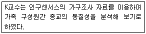
- 가구원
- 가구
- 종교
- 국가
(정답률: 48%)
7. 다음 중 2차 자료 사용에 관한 설명으로 틀린 것은?
- 2차 자료는 가설의 검증을 위해서는 사용할 수 없다.
- 자료 수집에 걸리는 시간과 노력을 줄일 수 있다.
- 다른 방법에 의해 수집된 자료를 보충하고 타당성을 검토하기 위해 사용한다.
- 연구상황을 파악하기 위하여 사용한다.
(정답률: 71%)
8. 일반적인 질문지 작성 원칙과 가장 거리가 먼 것은?
- 질문 문항은 명료하고 적절한 언어를 사용하여야 한다.
- 사회적으로 바람직한 응답이 도출될 수 있도록 하여야 한다.
- 이중적으로 해석될 수 있는 질문을 피하도록 한다.
- 질문 문장은 완전한 문장을 사용하는 것이 바람직하다.
(정답률: 82%)
9. 개방형 질문의 특징에 관한 설명으로 틀린 것은?
- 응답자들의 모든 가능한 의견을 얻어낼 수 있다.
- 탐색조사를 하려는 경우 특히 유용하게 이용될 수 있다.
- 응답내용의 분류가 어려워 자료의 많은 부분이 분석에서 제외되기도 한다.
- 질문에 비해 중립적인 입장을 가진 사람만을 대상으로 조사하더라도 극단적인 결론이 얻어진다.
(정답률: 70%)
10. 이메일을 활용한 온라인 조사의 장점과 가장 거리가 먼 것은?
- 신속성
- 저렴한 비용
- 면접원 편향 통제
- 조사 모집단 규정의 명확성
(정답률: 79%)
11. 다음 사례에서 가장 적합한 연구방법은?
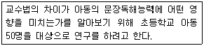
- 참여관찰법
- 내용분석법
- 실험법
- 조사연구법
(정답률: 60%)
12. 다음 중 전화조사가 가장 적합한 경우는?
- 어떤 시점에 순간적으로 무엇을 하며, 무슨 생각을 하는가를 알아내기 위한 조사
- 자세하고 심층적인 정보를 얻기 위한 조사
- 저렴한 가격으로 면접자 편의를 줄일 수 있으며 대답하는 요령도 동시에 자세히 알려줄 수 있는 조사
- 넓은 범위의 지리적인 영역을 조사대상지역으로 하여 비교적 복잡한 정보를 얻으면서, 경비를 절약할 수 있는 조사
(정답률: 54%)
13. 집단을 단위로 조사한 결과를 근거로 개인의 특성을 설명하려 할 때 발생할 수 있는 오류는?
- 집단주의적 오류(collective fallacy)
- 개인주의적 오류(individualistic fallacy)
- 생화화적 오류(biochemical fallacy)
- 생태학적 오류(ecological fallacy)
(정답률: 72%)
14. 다음 중 우편조사의 특징과 가장 거리가 먼 것은?
- 최소의 경비와 노력으로 광범위한 지역과 대상을 표본으로 삼을 수 있다.
- 응답률이 다른 조사에 비해 높다.
- 응답자에게 익명성에 대한 확신을 부여할 수 있다.
- 조사자의 개인차에서 오는 영향을 배제시킬 수 있다.
(정답률: 80%)
15. 관찰시기와 행동발생의 일치여부를 기준으로 관찰방법을 분류한 것은?
- 자연적 관찰과 인위적 관찰
- 공개적 관찰과 비공개적 관찰
- 체계적 관찰과 비체계적 관찰
- 직접관찰과 간접관찰
(정답률: 53%)
16. 실증주의적 과학관에서 주장하는 과학적 지식의 특징과 가장 거리가 먼 것은?
- 객관성(objectivity)
- 직관성(intuition)
- 재생가능성(reproducibility)
- 반증가능성(falsifiability)
(정답률: 72%)
17. 패널조사의 단점에 대한 설명으로 틀린 것은?
- 원조사대상이 이사를 하거나 사망하여 패널소멸이 일어날 경우 연구결과가 왜곡될 수 있다.
- 반복되는 조사를 통하여 응답자가 조사의 의도를 파악하여 연구결과가 왜곡될 수 있다.
- 장기간의 조사과정으로 조사자와 친밀해져서 부정확한 자료를 제공할 수 있다.
- 다른 조사방법에 비해 변화를 감지할 수 있는 가능성이 비교적 낮다.
(정답률: 84%)
18. 다음 중 대규모 집단의 특성을 체계적으로 파악하기에 가장 적합한 연구방법은?
- 내용분석
- 참여관찰
- 조사연구
- 비교실험
(정답률: 37%)
19. 질적조사방법과 양적조사방법의 차이점에 관한 설명으로 틀린 것은?
- 양적방법은 관찰자로부터 독립된 객관적 현상이 존재한다고 보는데 비하여 질적방법은 그렇지 않다.
- 양적방법은 현상의 결과적 측면에 주력한다면 질적방법은 현상의 과정적 측면을 이해하려 주력 한다.
- 양적방법은 조사절차가 유연하고 객관적이지만 질적방법은 그렇지 못하다.
- 양적방법은 일반화(generalization)를 위해 노력하지만 질적방법은 그렇지 않다.
(정답률: 70%)
20. 다음 자료수집방법 중 조사자의 특성에 따른 영향이 가장 적은 것은?
- 면접조사
- 전화조사
- 우편조사
- 집단조사
(정답률: 70%)
21. 다음 연구의 진행에 있어 내적 타당성을 위협하는 요인이 아닌 것은?
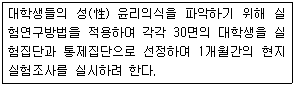
- 검사의 상호작용 효과(interaction testing effect)
- 우연적 시간(history)
- 실험변수의 확산 또는 모방(diffusion or imitation of treatments)
- 표본의 편중(selection bias)
(정답률: 27%)
22. 과학적 조사의 일반적인 절차를 바르게 나열한 것은?
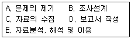
- A → B → C → E → D
- B → A → C → E → D
- A → C → B → D → E
- C → A → B → D → E
(정답률: 79%)
23. 논리적 연관성 도출방법 중 연역적 방법과 귀납적 방법에 관한 설명으로 틀린 것은?
- 귀납적 방법은 구체적인 사실로부터 일반원리를 도출해 낸다.
- 연역적 방법은 일정한 이론적 전제를 수립해 놓고 그에 따라 구체적인 사실을 수집하여 검증함으로써 다시 이론적 결론을 유도한다.
- 연역적 방법은 이론적 전제인 공리로부터 논리적 분석을 통하여 가설을 정립하여 이를 경험의 세계에 투사하여 검증하는 방법이다.
- 귀납적 방법이나 연역적 방법을 조화시키면 상호 배타적이기 쉽다.
(정답률: 79%)
24. 다음 질문항목의 문제점으로 가장 적합한 것은?
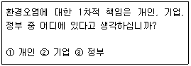
- 의미가 명확하게 구분되는 단어를 사용하지 않았다.
- 조사자 임의로 응답자들에 대한 가정을 하고 있다.
- 대답 가능한 응답을 모두 제시해주지 않았다.
- 응답항목간의 내용이 중복되어 있다.
(정답률: 69%)
25. 면접조사에서 조사자가 준수해야 할 일반적인 원칙으로 틀린 것은?
- 질문지를 숙지하고 있어야 한다.
- 응답자와 친숙한 분위기를 형성하여야 한다.
- 개방형 질문의 경우에는 응답내용을 해석하고 요약하여 기록하여야 한다.
- 면접자는 응답자가 이질감을 느끼지 않도록 복장이나 언어사용에 유의하여야 한다.
(정답률: 72%)
26. 응답자들이 일반적으로 응답을 꺼리는 위협적인 질문을 처리하는 방법에 대한 설명으로 틀린 것은?
- 질문배열의 순서를 조정한다.
- 질문을 솔직하게 표현한다.
- 솔직한 응답의 필요성을 강조한다.
- 비밀과 익명성의 보장을 강조한다.
(정답률: 71%)
27. 순수실험설계(true experimental design)의 특징이 아닌 것은?
- 비동질 통제집단의 설정
- 실험집단과 통제집단에 대한 무작위 할당
- 독립변수의 조작
- 외생변수의 통제
(정답률: 53%)
28. 사회과학적 연구의 일반적인 연구목적과 가장 거리가 먼 것은?
- 사건이나 현상을 설명(explanation)하는 것이다.
- 사건이나 상황을 기술 또는 서술(description)하는 것이다.
- 사건이나 상황을 예측(prediction)하는 것이다.
- 새로운 이론(theory)이나 가설(hypothesis)을 만드는 것이다.
(정답률: 57%)
29. 작업가설(working hypothesis)의 요건에 관한 설명으로 틀린 것은?
- 모든 변수들을 조작적으로 명확하게 정의한 진술이어야 한다.
- 연구자의 입장과 관점에 의하여 가치를 판단할 수 있는 진술이어야 한다.
- 연구자가 경험적으로 검정할 수 있는 진술이어야 한다.
- 참일 수도 있고 거짓일 수도 있는 종합적인(synthetic) 진술이어야 한다.
(정답률: 50%)
30. 사례조사연구의 목적으로 가장 적합한 것은?
- 명제나 가설의 검증
- 연구대상에 대한 기술과 탐구
- 분석단위의 파악
- 연구결과에 대한 일반화
(정답률: 48%)
2과목: 조사방법론 II
31. 다음 중 회사의 면접시험에 면접심사위원이 한 사람이 아니라 여러 사람으로 구성되는 이유로 가장 적합한 것은?
- 타당도를 높이기 위하여
- 신뢰도를 높이기 위하여
- 안전도를 높이기 위하여
- 정확도를 높이기 위하여
(정답률: 46%)
32. 연속변수(continuous variable)과 이산변수(discrete variable)에 관한 설명으로 틀린 것은?
- 연속변수는 사람․대상물 또는 사건을 그들 속성의 크기나 양에 따라 분류하는 것이다.
- 연속변수는 측정한 값들이 척도상에서 무한대로 미분해도 가능하리만큼 연속성을 띤 것으로 거의 무한개의 값을 가질 수 있다.
- 이산변수는 정수값만으로 구성된다.
- 등간척도․비율척도는 이산변수와 관련되어 있다.
(정답률: 57%)
33. 확률표본추출방법(probability sampling)과 비확률표본추출방법(non-probability sampling)에 대한 설명으로 틀린 것은?
- 확률표본추출방법은 구성원들의 명단이 기재된 표본 프레임(sample frame)이 있다.
- 확률표본추출방법은 조사대상이 뽑힐 확률을 미리 알아서 표본의 모집단의 대표성을 산출 할 수 있다.
- 비교적 정확한 표본 프레임의 입수가 가능하다면 확률표본추출방법보다는 비확률표본추출방법을 이용하는 것이 바람직하다.
- 비확률표본추출방법은 조사결과에 포함될 수 있는 오류에 대한 정확한 정보를 얻을 수 없다.
(정답률: 67%)
34. 다음 중 표집방법에 관한 설명으로 틀린 것은?
- 편의표집(convenience sampling)은 표본의 대표성을 확보하기 어렵다.
- 할당표집(quota sampling)에서는 조사결과의 오차 범위를 계산할 수 있다.
- 확률표집과 비확률표집의 차이는 무작위 표집 절차 사용여부에 의해 결정된다.
- 층화표집(stratified sampling)에서는 모집단의 의미 있는 특징에 의하여 소집단으로 분할된다.
(정답률: 55%)
35. 연구자가 여러 개의 문항들로 하나의 척도를 만들어 주어진 현상의 어떤 속성을 측정하는 경우, 그 문항들은 각기 측정하고자 하는 속성의 서로 다른 차원을 다루는 것이 아니라 하나의 차원을 다루어야 한다. 척도의 이런 특성을 무엇이라 하는가?
- 다차원성
- 단일차원성
- 독립차원성
- 공분산성
(정답률: 70%)
36. 다음 중 실용성과 효율성이 높다고 인정되며, 총화평정기법(summated rating technique)이라고도 불리는 척도는?
- 서스톤척도(thurston scale)
- 리커트척도(likert scale)
- 거트만척도(guttman scale)
- 의미분화척도(semantic differential scale)
(정답률: 54%)
37. 하나의 개념을 측정하기 위한 측정도구에 다수의 문항을 포함시키는 목적과 가장 거리가 먼 것은?
- 측정의 신뢰도를 높여 준다.
- 측정의 타당도를 높여 준다.
- 복합적 개념을 측정 가능하게 한다.
- 추상적 개념을 수량화할 수 있다.
(정답률: 43%)
38. 척도는 응답자, 자극 또는 응답자와 자극을 동시에 측정하려고 하는가에 따라서 여러 방식이 있다. 이 중 응답자와 자극을 동시에 측정하는 척도는?
- 서스톤척도(thurston scale)
- 리커트척도(likert scale)
- 거트만척도(guttman scale)
- 의미분화척도(semantic differential scale)
(정답률: 39%)
39. 모집단에 대한 정보를 담은 명부를 표집틀로 해서 일정한 순서에 따른 표본을 추출하는 표집방법은?
- 단순무작위표집(simple random sampling)
- 계통표집(systematic sampling)
- 유의표집(purposive sampling)
- 층화표집(stratified sampling)
(정답률: 50%)
40. 암기력을 측정하기 위해 암기 한 것들을 모두 종이위에 쓰도록 하는 방법과 암기한 것을 모두 말하도록 하는 방법을 사용하는 경우, 서로 다른 두 가지의 측정방법을 측정한 결과값들 간에 상관관계의 정도를 나타내는 타당성은 무엇인가?
- 내용타당성(content validity)
- 기준에 의한 타당성(criterion-related validity)
- 예측타당성(predictive validity)
- 집중타당성(convergent validity)
(정답률: 46%)
41. 여러 개의 측정항목 중에서 신뢰도를 저해하는 항목을 찾아내어 측정항목을 제외시킴으로써 측정도구의 신뢰성을 높이고자 하는 경우에 사용되는 것은?
- 재검사법(test-retest reliability)
- 반분법(split-half reliability)
- 동형검사 신뢰도(parallel reliability)
- 내적 일관성(internal consistency reliability)
(정답률: 56%)
42. 다음 중 측정오차의 원인이 아닌 것은?
- 측정자의 잘못 때문이다.
- 측정자나 피측정자가 지니는 지적 사고력이나 판단력에 기인한다.
- 측정소재의 관련이나 시 ․ 공간의 제약 때문이다.
- 사회과학에서 측정오차방법은 예외적 현상이다.
(정답률: 68%)
43. 조작화의 결과로서 신앙심을 측정하기 위해서 사용된 일주일간 성경책을 읽는 횟수는 다음 중 무엇을 나타내는 예인가?
- 개념적 정의
- 지표
- 개념
- 지수
(정답률: 47%)
44. 여성근로자를 대상으로 하는 사회조사에서 변수가 될 수 없는 것은?
- 성별
- 연령
- 직업종류
- 근무시간
(정답률: 68%)
45. 사회적 거리척도로서 집단 간 거리측정이 아니라 집단 내 구성원간의 거리를 측정하는데 유용한 방법은?
- 서스톤척도(thurston scale)
- 리커트척도(likert scale)
- 소시오매트리(sociometry)
- 보가더스 척도(bogardus scale)
(정답률: 63%)
46. 다음 ( )안에 들어갈 알맞은 것은?
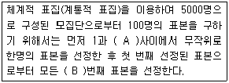
- A - 50, B - 50
- A - 10, B - 50
- A - 100, B - 50
- A - 100, B - 100
(정답률: 55%)
47. 지수와 척도에 관한 설명으로 틀린 것은?
- 지수와 척도 모두 변수에 대한 서열측정이다.
- 척도점수는 지수점수보다 더 많은 정보를 전달한다.
- 지수와 척도 모두 둘 이상의 자료문항에 기초한 변수의 합성 측정이다.
- 지수는 동일한 변수의 속성들 가운데서 그 강도의 차이를 이용하여 구별되는 응답 유형을 밝혀 낸다.
(정답률: 45%)
48. 표본의 크기결정을 위한 고려사항과 가장 거리가 먼 것은?
- 오차의 한계
- 신뢰수준
- 모집단의 표준편차
- 타당도
(정답률: 48%)
49. 표본추출에서 가장 중요한 것은?
- 대표성과 경제성
- 대표성과 신속성
- 대표성과 적절성
- 정확성과 경제성
(정답률: 66%)
50. 표본추출률 또는 표집비율(sampling fraction)이란?
- 실험집단의 크기에 대한 통제집단의 크기
- 모집단의 크기에 대한 표본집단의 크기
- 두 개 표본집단간의 동질성을 비교한 것
- 현지실험과 현지조사의 차이를 비교한 것
(정답률: 68%)
51. 다음 중 불포함 오류에 관한 설명으로 옳은 것은?
- 표본조사를 할 때 표본체계가 완전하게 되지 않아서 발생하는 오류이다.
- 표본추출과정에서 선정된 표본 중 일부가 연결이 되지 않거나 응답을 거부했을 때 생기는 오류이다.
- 면접이나 관찰과정에서 응답자나 조사자 자체의 특성에서 생기는 오류와 양자 간의 상호관계에서 생기는 오류이다.
- 정확한 응답이나 행동을 한 결과를 조사자가 잘못 기록하거나 기록된 설문지나 면접자가 분석을 위하여 처리되는 과정에서 틀려지는 오류이다.
(정답률: 38%)
52. 특정한 구성개념이나 잠재변수의 값을 측정하기 위해 측정할 내용이나 측정방법을 구체적으로 정확하게 표현하고 의미를 부여하는 것은?
- 구성적 정의(constitutive definition)
- 조작적 정의(operational definition)
- 개념화(conceptualization)
- 패러다임(paradigm)
(정답률: 59%)
53. 다음 중 단순무작위표집을 통하여 자료를 수집하기 어려운 조사는?
- 신용카드 이용자의 불편사항
- 조세제도 개혁에 대한 중산층의 찬반 태도
- 새 입시제도에 대한 고등학생의 찬반 태도
- 동 주민센터 행정서비스에 대한 거주민의 만족도
(정답률: 62%)
54. 총 학생 수가 2000명인 학교에서 500명을 표집할 때의 표집율은?
- 25%
- 40%
- 80%
- 100%
(정답률: 58%)
55. 다음 중 층화표집의 장점과 가장 거리가 먼 것은?
- 관련된 변인의 대표성의 보장된다.
- 다른 모집단들과 비교가 가능하다.
- 동질적인 집단에서 표본이 가능하다.
- 표본선정이 쉽다.
(정답률: 40%)
56. 다음 중 측정의 수준이 다른 하나는?
- GNP
- 생활수준
- 도시화율
- 출산율
(정답률: 51%)
57. 추상적 개념을 측정하기 위해 여러 개의 문항 값을 합산하는 척도에서 신뢰도를 높이기 위해 특별히 유의해야 할 점은?
- 동등성
- 정확성
- 안정성
- 타당성
(정답률: 39%)
58. 대학생을 대상으로 여론조사를 할 때, 모집단 학생들의 학년별 구성을 가장 잘 반영할 수 있는 표집방법은?
- 계통표집(systematic sampling)
- 층화표집(stratified sampling)
- 단순무작위표집(simple random sampling)
- 눈덩이표집(snowball sampling)
(정답률: 66%)
59. 종업원이 친절할수록 패밀리 레스토랑의 매출액이 증가한다는 가설을 검증하고자 할 경우, 레스토랑의 음식의 맛 역시 매출에 영향을 미친다면 음식의 맛은 어떤 변수인가?
- 종속변수
- 매개변수
- 외생변수
- 조절변수
(정답률: 52%)
60. 다음 표본추출방법 중 확률표본추출 방법인 것은?
- 편의표집(convinience sampling)
- 유의표집(purposive sampling)
- 할당표집(quota sampling)
- 단순무작위표집(simple random sampling)
(정답률: 65%)
3과목: 사회통계
61. 20세 성인남성의 키는 정규분포를 따르며, 평균 172cm이고 표준편차는 5.5cm 이다. 20세 성인남성의 키가 161cm에서 183cm의 범위에 있는 사람의 비율은?
- 약 68.3%
- 약 95.4%
- 약 99.7%
- 알 수 없음
(정답률: 52%)
62. 모집단 {1, 2, 3, 4, 5}에서 비복원으로 크기 3의 표본을 추출하여 표본평균을 이용하여 모평균을 추정한다고 할 때 추정오차의 최대값은?
- 1
- 3
- 2
- 0
(정답률: 28%)
63. 다음 자료에 대한 설명으로 틀린 것은?
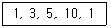
- 분산은 14이다.
- 중위수는 5이다.
- 범위는 9이다.
- 평균은 4이다.
(정답률: 47%)
64. Y의 X에 대한 회귀직선식이
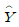
= 3 + X 이라 한다. Y의 표준편차 5, X의 표준편차가 3일때, Y와 X의 상관계수는?- 0.6
- 1
- 0.8
- 0.5
(정답률: 33%)
65. 정규분포를 따르는 모집단의 모평균에 대한 가설 H0 : μ = 50 VS H1 : μ < 50 를 검정하고자 한다. 크기 n=100 의 임의표본을 취하여 표본평균을 구한 결과
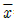
= 49.2 를 얻었다. 모 집단의 표준편차가 5라면 유의확률은 얼마인가? [(단, P(Z≤-1.96)=0.025, P(Z≤-1.645)=0.⑤)]- 0.025
- 0.⑤
- 0.95
- 0.975
(정답률: 18%)
66. 분산분석에 대한 옳은 설명만 짝지어진 것은?
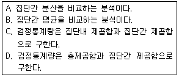
- A, C
- A, D
- B, C
- B, D
(정답률: 26%)
67. A상표 전구와 B상표 전구의 수명을 비교하기 위해서 A상표 전구 40개와 B상표 전구 50개를 랜덤하게 수거하여 실험한 결과 표본의 평균수명시간이 각각
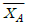
=418(시간)과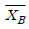
=402(시간)임을 알았다. A, B 각 상표 전구의 수명시간은 정규분포를 따르며, 표준편차는 각각σA=26(시간)과 σ=22(시간)이라고 가정할 때, 두 상표 전구의 평균수명시간의 차 μA-μB에 대한 95% 신뢰구간은?- (-9.778, 41.778)
- (-9.262, 41.262)
- (5.895, 26.1⑤)
- (5.688, 26.312)
(정답률: 28%)
68. 우리나라 사람들 중 왼손잡이 비율은 남자가 2%, 여자가 1%라 한다. 남학생 비율이 60%인 어느 학교에서 왼손잡이 학생을 선택했을 때 이 학생이 남자일 확률은?
- 0.75
- 0.012
- 0.25
- 0.⑤
(정답률: 35%)
69. 동일한 신뢰수준에 모비율 θ에 대한 신뢰구간의 길이를 절반으로 줄이기 위해서는 표본크기를 몇 배로 하여야 하는가?
- 루트 2배
- 2 배
- 4 배
- 1/4배
(정답률: 50%)
70. 다음 중 좌우대칭인 분포는?
- 포아송 분포
- t-분포
- F -분포
- 기하분포
(정답률: 47%)
71. 결정계수(coefficient of determination)에 대한 설명으로 틀린 것은?
- 총변동 중에서 회귀식에 의하여 설명되어지는 변동의 비율을 뜻한다.
- 종속변수에 미치는 영향이 적은 독립변수가 추가 된다면 결정계수는 변하지 않는다.
- 모든 측정값들이 추정회귀직선상에 있는 경우 결정계수는 1 이다.
- 단순회귀의 경우 독립변수와 종속변수간의 표본상관계수의 제곱과 같다.
(정답률: 42%)
72. 2차원 교차표에서 행 변수의 범주 수는 5이고, 열 변수의 범주 수는 4개이다. 두 변수간의 독립성검정에 사용되는 검정통계량의 분포는?
- 자유도 9인 카이제곱 분포
- 자유도 12인 카이제곱 분포
- 자유도 9인 t 분포
- 자유도 12인 t 분포
(정답률: 44%)
73. 다음 중 표본평균
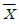
의 속성이 아닌 것은?- 표본평균의 평균은 모집단의 평균과 동일하다.
- 이상치(outlier)의 영향을 많이 받는 편이다.
- 중심위치를 나타내는 통계량 중 하나이다.
- 크기 순서대로 나열된 자료를 같은 크기의 2개 집단으로 나눈다.
(정답률: 38%)
74. 중심극한정리(central limit theorem)는 어느 분포에 관한 것인가?
- 모집단
- 표본
- 모집단의 평균
- 표본의 평균
(정답률: 41%)
75. 어떤 주사위가 공정한지를 검정하기 위해 실제로 60회를 굴려 아래와 같은 결과를 얻었다. 유의수준 5%에서의 검정결과로 옳은 것은?(단, X2(5, 0.⑤)=11.07)
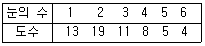
- 주사위는 공정하다고 볼 수 있다.
- 주사위는 공정하다고 볼 수 없다.
- 60번의 시행으로는 통계적 결론의 도출이 어렵다.
- 단지 눈의 수가 2인 면이 이상하다고 볼 수 있다.
(정답률: 33%)
76. 귀무가설이 참임에도 불구하고 대립가설이 옳다고 잘못 결론을 내리는 오류는?
- 제1종 오류
- 제2종 오류
- 알파오류
- 베타오류
(정답률: 38%)
77. 모집단의 표준편차의 값이 작을 때의 표본평균 값은?
- 대표성이 크다.
- 대표성이 적다.
- 대표성의 정도는 표준편차와 관계없다.
- 어느 것도 해당되지 않는다.
(정답률: 51%)
78. 다음 중 이항분포를 따르지 않는 것은?
- 주사위를 10번 던졌을 때 짝수의 눈의 수가 나타난 횟수
- 어떤 기계에서 만든 5개의 제품 중 불량품의 개수
- 1시간 동안 전화교환대에 걸려오는 전화 수
- 한 농구선수가 던지 3개의 자유투 중에서 성공한 자유투의 수
(정답률: 47%)
79. X ~ N(25,36)일 때, P(|X-25|≤C)=0.9544 를 만족하는 C 값은?(단, P(Z≦2)=0.9722,P(Z≦1.69)=0.9544, Z ~ N(0,1))
- C=10
- C=12
- C=14
- C=16
(정답률: 38%)
80. 표본의 수가 n 이고, 독립변수의 수가 k 인 중선형회귀모형의 분산분석표에서 잔차제곱합 SSE 의 자유도는?
- k
- k+1
- n-k-1
- n-1
(정답률: 46%)
81. 다음은 전자제품 조립공장에서 작업시간대에 따라 생산량의 차이가 있는가를 검정하기 위해 시간대별 생산량을 반복 관측하여 정리한 결과이다. 이 자료에 대한 분석분석표가 아래와 같을 때 ( )에 들어갈 값은?
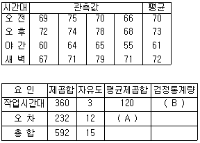
- A = 19.3, B = 1.55
- A = 19.3, B = 6.21
- A = 30, B = 4
- A = 30, B = 0.25
(정답률: 54%)
82. 다음 중 산포의 측도를 나타내는 통계량은?
- 표본평균
- 중앙값
- 사분위수범위
- 최빈값
(정답률: 45%)
83. 오른쪽으로 꼬리가 길게 늘어진 형태의 분포에 대해 옳은 설명으로만 짝지어진 것은?
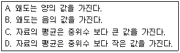
- A, C
- A, D
- B, C
- B, D
(정답률: 35%)
84. 교차표를 만들어 두 변수 간의 독립성 여부를 유의수준 0.⑤에서 검정하고자 한다. 검정 통계량의 유의확률이 0.55로 나왔다면 결과 해석으로 옳은 것은?
- 두 변수 간에는 상호 연관 관계가 있다.
- 두 변수는 서로 아무런 관계가 없다.
- 이것만으로 상호 어떤 관계가 있는지 말할 수 있다.
- 한 변수의 범주에 따라 다른 변수의 변화 패턴이 다르다.
(정답률: 43%)
85. 구간 [0, 1]에서 연속인 확률변수 의 확률밀도함수가 f(x)=1 일 때, x 의 평균은?
- 1/3
- 1/2
- 1
- 2
(정답률: 38%)
86. 단위가 다른 두 집단 간에 산포를 비교하고자 할 때 가장 적합한 측도는?
- 분산
- 범위
- 변동계수
- 사분위범위
(정답률: 47%)
87. 상관관계(correlation)에 대한 설명으로 옳은 것은?
- 두 변수 간에 강한 상관관계가 존재하면 두 변수는 서로 독립적이라고 한다.
- 두 변수 간의 상관관계로부터 인과관계를 도출할 수 있다.
- 두 변수 간에 상관관계가 없다면 피어슨 상관계수의 값은 0 이다.
- 피어슨 상관계수의 값은 항상 0 이상 1 이하이다.
(정답률: 40%)
88. 양면이 고른 동전 3개를 던질 때 적어도 앞면이 하나이상 나올 확률은?
- 7/8
- 6/8
- 5/8
- 4/8
(정답률: 45%)
89. 단순회귀분석에서 회귀직선의 기울기와 독립변수와 종속변수의 상관계수와의 관계에 대한 설명으로 옳은 것은?
- 회귀직선의 기울기가 양수이면 상관계수도 양수이다.
- 회귀직선의 기울기가 양수이면 상관계수도 음수이다.
- 회귀직선의 기울기가 음수이면 상관계수도 양수이다.
- 회귀직선의 기울기가 양수이면 공분산이 음수이다.
(정답률: 46%)
90. 단순회귀모형
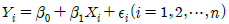
의 가정하에 최소제곱법에 의해 회귀직선을 추정하는 경우 잔차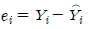
에 대한 설명으로 틀린 것은?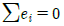
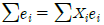
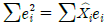
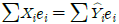
(정답률: 39%)
91. 두 확률변수 X, Y 는 서로 독립이며 표준정규분포를 따른다. 이 때 U=X+Y, V=X-Y 로 정의하면 두 확률변수 U, V 는 각각 어떤 분포를 따르는가?
- U, V 두 변수 모두 N(0,2) 를 따른다.
- U ~ N(0,2)를 V ~ N(0,1) 를 따른다.
- U ~ N(0,1)를 V ~ N(0,2) 를 따른다.
- U, V 두 변수 모두 N(0,1) 를 따른다.
(정답률: 34%)
92. 두 변량 X 와 Y 의 관계를 분석하고자 한다. X 와 Y 가 모두 연속형 변수일 때 가장 적합한 분석은?
- 분산분석
- 회귀분석
- 교차분석
- 베이즈분석
(정답률: 36%)
93. 다음 중 이항분포에 관한 설명으로 틀린 것은?
- p=1/2 이면 좌우대칭의 형태가 된다.
- p가 1/2보다 크거나 작으면 왜도값이 0 이 아니다.
- p 가 0.5보다 작은 경우 양(+)의 왜도를 갖는 분포이다.
- n이 충분히 커지면 음(-)의 왜도를 갖는다.
(정답률: 38%)
94. 다음 중 산포도에 관한 설명으로 틀린 것은?(오류 신고가 접수된 문제입니다. 반드시 정답과 해설을 확인하시기 바랍니다.)
- 관측값들이 평균으로부터 멀리 떨어져 나타날수록 분산은 커진다.
- 평균편차의 총합은 0 이다.
- 분산은 평균편차의 절대값들의 평균이다.
- 표준편차는 분산의 제곱근이다.
(정답률: 36%)
95. 통계적 가설검정을 위한 검정통계값에 대한 유의확률(p-value)이 주어졌을 때, 귀무가설을 유의수준 α로 기각할 수 있는 경우는?
- p-value > α
- p-value < α
- p-value ≥ α
- p-value > 2α
(정답률: 44%)
96. 제1종 오류(Type I error)를 α, 제2종의 오류(Type II error)를 β라 할 때의 설명으로 옳은 것은?
- α+β=1 이면 귀무가설을 기각해야 한다.
- α=β 이면 귀무가설을 채택해야 한다.
- α=β 이면 (1-α)는 검정력(power)과 같다.
- α≠β 이면 항상 귀무가설을 채택해야 한다.
(정답률: 45%)
97. 교육수준에 따른 생활만족도의 차이를 다양한 배경변수를 통제한 상태에서 비교하기 위해서 다중회귀분석을 실시하고자 한다. 교육수준을 5개의 범주로(무학, 초졸, 중졸, 고졸, 대졸 이상)측정하였다. 이 때 교육수준별 차이를 나타내는 가변수(dummy variable)를 몇 개 만들어야 하는가?
- 1개
- 2개
- 3개
- 4개
(정답률: 56%)
98. 모평균이 100, 모표준편차가 20인 무한모집단으로부터 크기 100의 단순임의표본을 얻었다. 이 때 표본평균
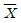
의 평균과 표준편차는?- 평균 = 100, 표준편차 = 2
- 평균 = 1, 표준편차 = 2
- 평균 = 100, 표준편차 = 0.2
- 평균 = 1, 표준편차 = 0.2
(정답률: 38%)
99. 일원배치 분산분석에서 다음과 같은 결과를 얻었을 때, 처리효과의 유의성 검정을 위한 검정통계량의 값은?
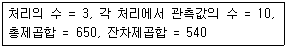
- 1.83
- 1.90
- 2.75
- 2.85
(정답률: 30%)
100. A 도시에서는 실업률이 5.5%라고 발표하였다. 그러나 관련 민간단체에서는 실업률 5.5%는 너무 낮게 추정된 값이라고 믿고 이에 대해 확인하고자 한다. 노동력인구 중 520 명을 임의 추출하여 조사한 결과 39 명이 직업이 없음을 알게 되었다. 이 문제에 대한 적합한 검정통계량 값은?
- -2.58
- 1.96
- 2.00
- 1.75
(정답률: 26%)